转载自http://blog.csdn.net/hacke2/article/details/21702157
5. CSS的聚合/组合原则--挂多个class还是新建
CSS里也包含了设计模式的6大原则，今天讲讲聚合/组合原则--多用组合，少用继承
假设有如图3-1所示的模块。
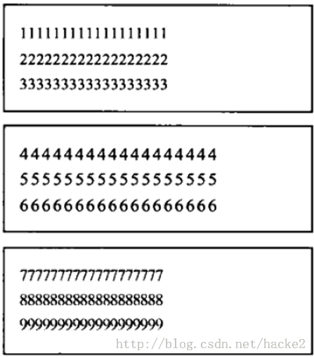
图3-1 三个简单模块
我们如何设置它的CSS呢？方案一如代码清单3-11所示。
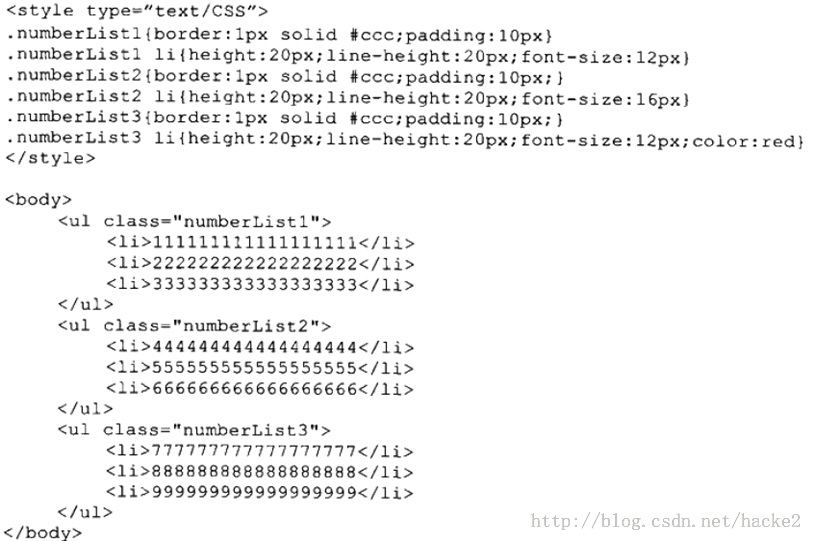
方案一可以实现我们想要的效果，但它非常冗余，“.numberList1”、“.numberList2”和“.numberList3”的CSS设置相同，
“.numberList1 li”、“.numberList2 li”和“.numberList3 li”有部分CSS一致。我们对它们进行改进，产生方案二，如代码清单3-12所示。
代码清单3-12 方案二
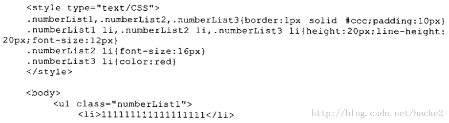
除了方案二，还有另一种思路，方案三如代码清单3-13所示。
代码清单3-13 方案三
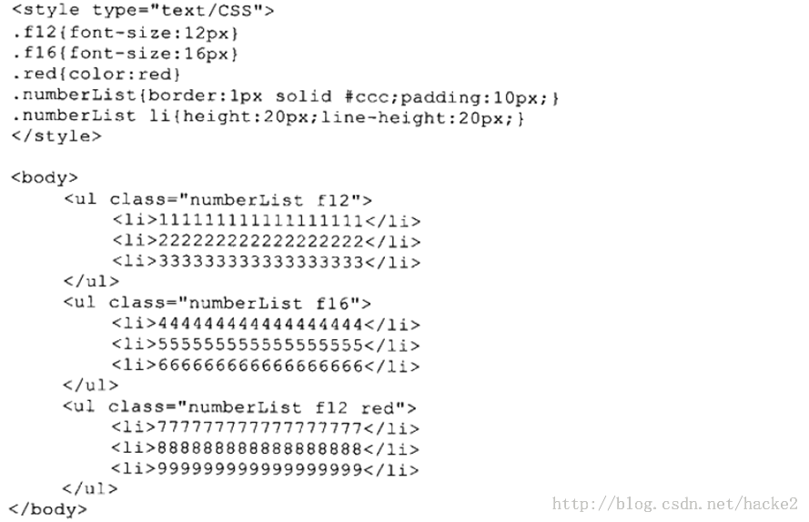
方案一将图中的三个模块视为完全不同且彼此独立的三个类,分别命名为numberList1、numberList2和numberList3，并对它们分别设置样式。其缺点是代码冗余。
方案二和方案一思路相同，仍将模块视为完全不同且彼此独立的三个类，只是使用CSS技巧将三个类相同的部分提取出来，去除了代码的冗余。方案三换了种思路，
提取了更多粒度更小的类，通过类的组合实现设计图的效果。
方案二和方案三看似都是不错的解决方案，其中方案二的优势是调用简单，一个模块只需挂一个类；方案三调用稍麻烦，但也有效控制了冗余，代码精简。
看起来似乎方案二和方案三都不错，但如果想实现如图3-11所示的效果，又会如何呢？
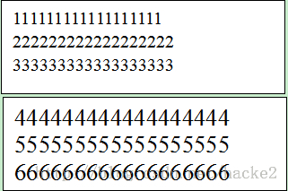
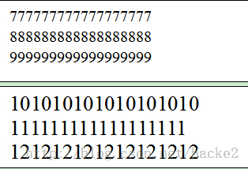
按照方案二的思路，代码如代码清单3-14所示。
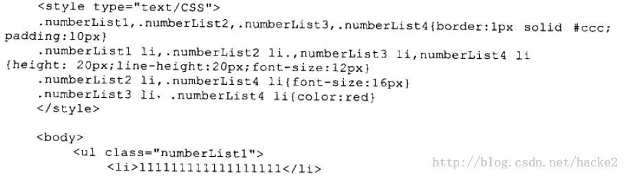
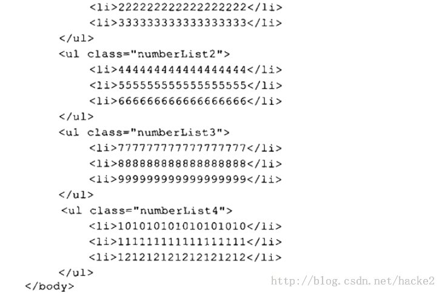
按照方案三的思路，代码如清单3-15所示。
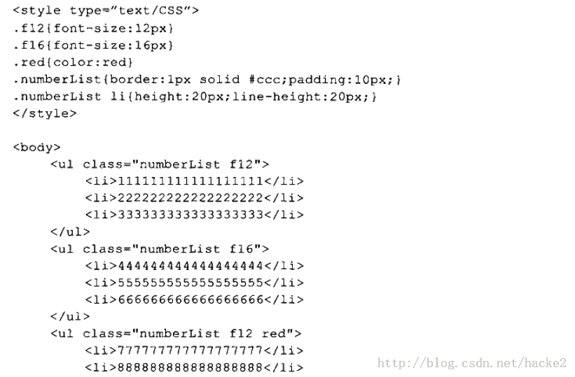
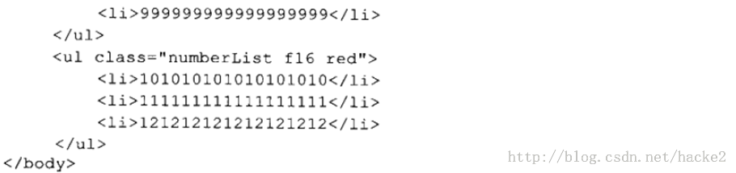
按照方案二的思路，我们需要再定义一个新的类numberList4，在CSS里需要修改好几处；按照方案三的思路，我们无需扩展新的类，
只需在HTML标签的class里将之前定义的类重新组合即可。
在面向对象编程里，有类似的情况；继承与组合。继承的思路是将一个复杂且包含变化的类，拆分成几个复杂但稳定的子类。首先明确一个抽象的父类，
父类有着几乎所有的方法和属性，子类继承自父类，根据需求，添加新的方法和属性，覆盖掉与父类有变化的方法和属性。
但使用继承的话，任何一点小的变化也需要重新定义一个类，很容易引起类的爆炸式增长，产生一大堆有着细微不同的子类。
组合的思路是将一个复杂的类分成容易产生变化的部分和相对稳定的部分，将容易变化的部分拆分出去，每一种可能的变化设计成一个个单独的类，
相对稳定的部分设计成一个主体类。这样，将一个复杂的类拆分成几个简单的类，类之间没有继承关系，这遵循了面向对象设计的“单一职责”原则。
这些容易变化的类的实例赋值给主体类作为一个属性，实现了类的组合。用组合的方式，可以大大减少类的数量。在面向对象编程里，有个很重要的原则就是“多用组合，
少用继承”。一些偏激的工程师甚至认为继承是错误的，是造成维护性差的罪魁祸首，主张完全使用组合，拒接使用继承。
方案三就是借鉴了编程领域类的组合的思想，将方案二中复杂的numberList1类、numberList2类和numberList3类拆分成了几个相对简单的类，
其中相对稳定的部分拆分成numberList类，而可能变化的部分拆分成fl2类、fl6类和red类。通过类的组合，很容易实现类的扩展，避免产生类爆炸。
HTML标签的class属性和id属性不同，id只能挂一个，而class可以挂多个，用空格分隔。例如“
HTML的class与程序中“类”有相同的“味道”，class可以挂多个，从技术上支持了“组合”的用法。我们在使用css时，如果能灵活运用这点就可以大大减少类的数量，
一方面减少了代码量，提高了可维护性，另一方面使类的职责更单一，弹性更强，增加了类的重用性，提高了开发效率。
挂多个class会不会让HTML标签看起来过于臃肿呢？这样做真的好吗？臃肿固然不好看，但它带来的好处却是不容忽视的，笔者推荐挂多个class，
哪怕它让HTML标签看起来不太轻盈。Yahoo的YUI3官方演示文档中的一部分代码如代码清单3-16所示。
代码清单3-16 YUI3中的class
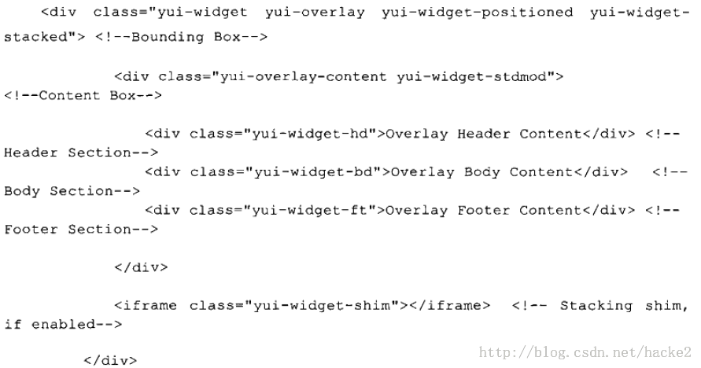
可以看出Yahoo的前端开发工程师也喜欢挂多个class的方式。